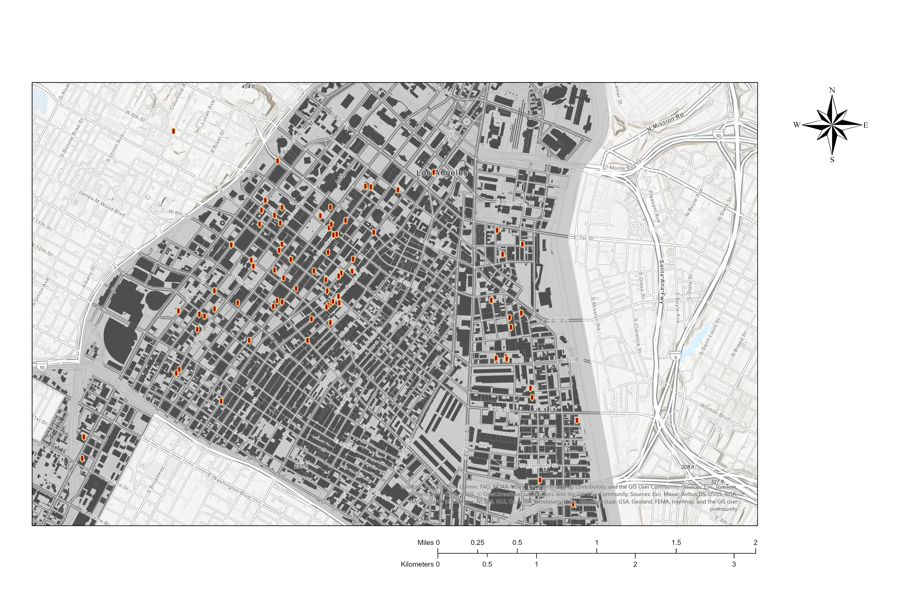
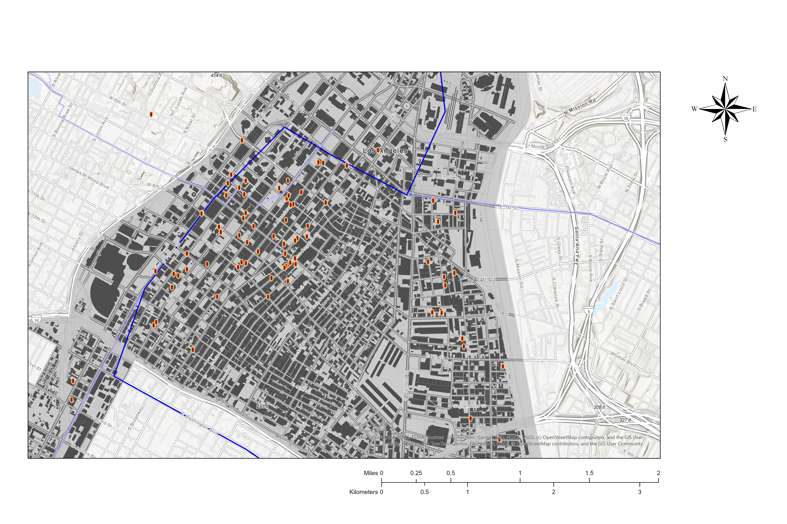
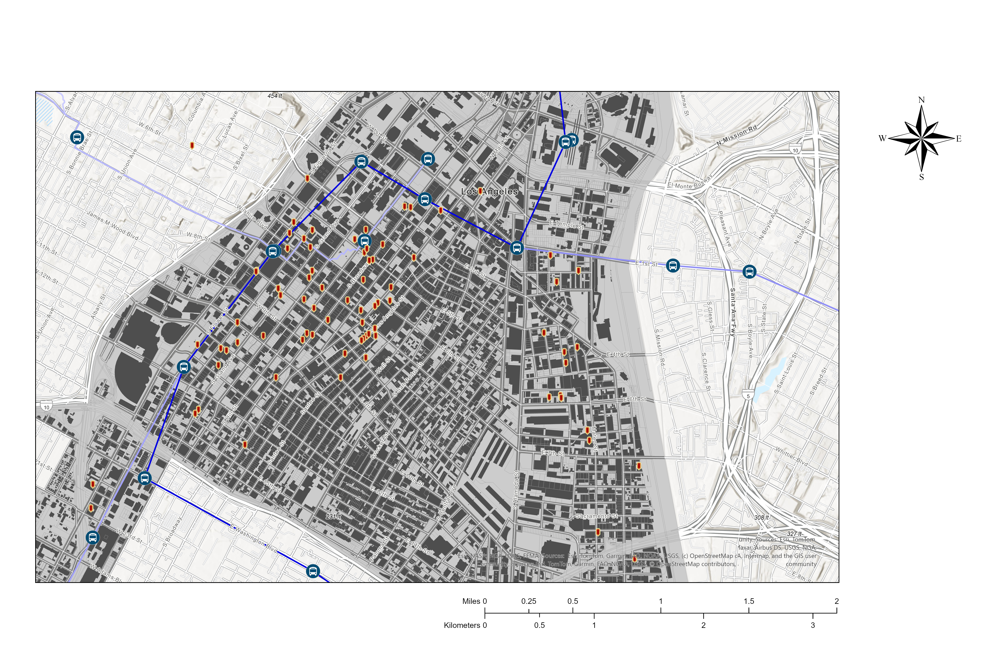
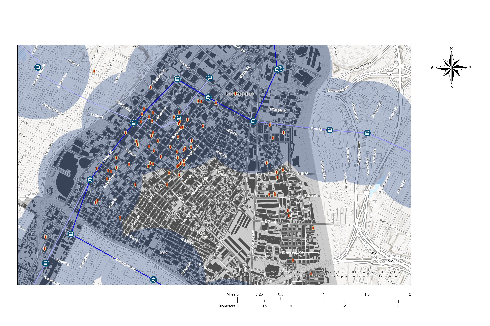
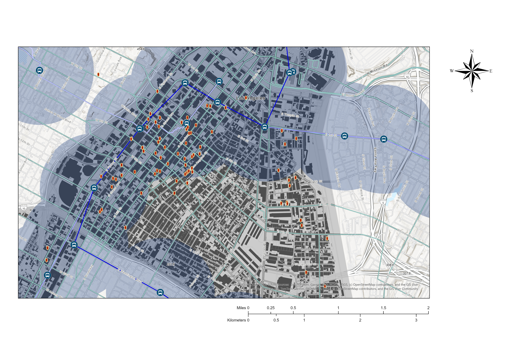
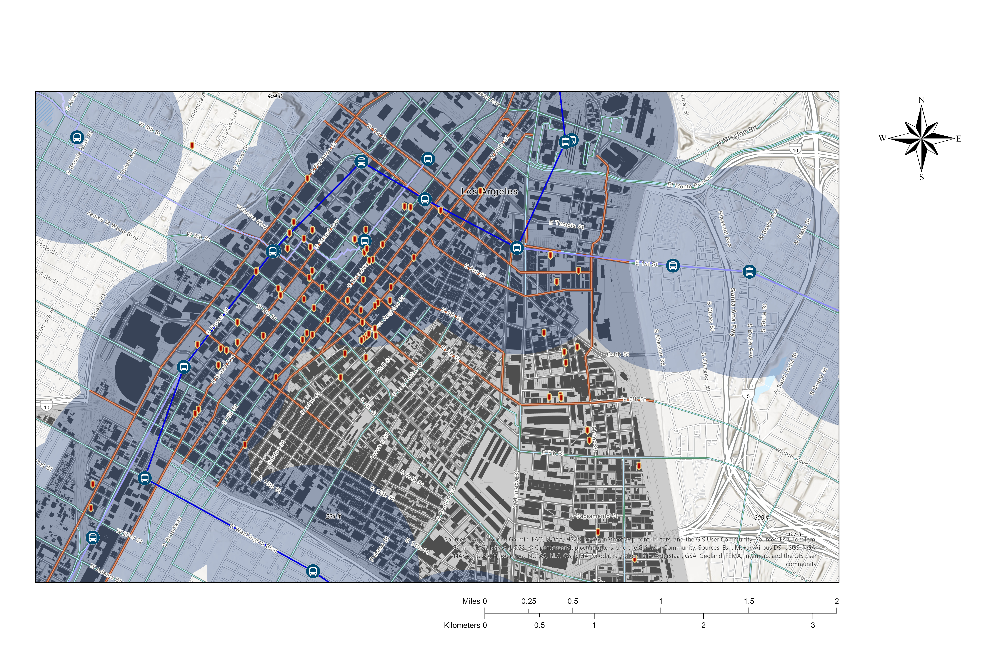
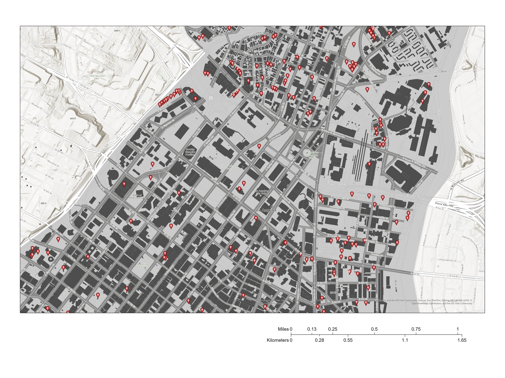
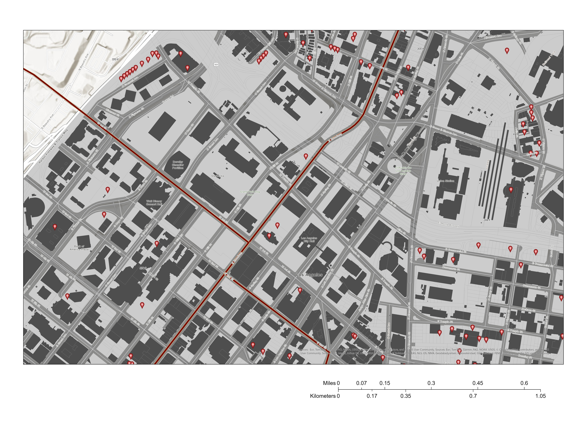

Where This Started
"Why are there so many empty historic and commercial buildings around here? Is it financial? Is it policy-related? Or do people just not want to live in them?"
— Observation while living in Downtown LA, Summer 2025Downtown Los Angeles has cycled through financial districts, commercial hubs, and cultural revivals over the past century. Yet walking its streets reveals a persistent paradox: hundreds of vacant and underused buildings sit within blocks of a housing crisis that has placed LA among the most unaffordable cities in the country.
The Adaptive Reuse Ordinance (ARO), introduced in 1999, was designed to close this gap — converting old commercial and industrial buildings into residential and mixed-use spaces while preserving the city's architectural heritage. This project became a spatial research investigation: which parcels in DTLA are most ready for adaptive reuse right now? The answer depends on proximity to transit, street-level activity, and the precedent set by 25 years of ARO conversions.
Research Questions
Where are the DTLA parcels most ready for adaptive reuse, measured by proximity to Metro rail stations and bus routes? Do ARO conversions cluster within half-mile transit catchments?
Can open-street events like CicLAvia influence building reuse interest? How does event-driven foot traffic and bicycle lane proximity signal redevelopment opportunity?
Presentation Slides

DTLA context — LA's housing crisis and the 25-year history of the Adaptive Reuse Ordinance.

ARO policy framework — eligibility criteria, zoning overlays, and incentive structures for conversion projects.

ARO conversions over time — 25 years of projects mapped across DTLA.

Metro station ½-mile buffers overlaid on ARO projects — 72% of conversions fall within one catchment.

Bus routes and bicycle lane corridors — secondary transit layers for parcel scoring.
Key Finding — Transit & ARO Patterns
Data from 153 documented ARO conversions revealed a strong spatial relationship between transit access and redevelopment activity. Parcels within half a mile of a Metro station accounted for a disproportionate share of all conversions — and the most transit-accessible parcels also concentrated the most dwelling units and commercial condominiums.
| Project Characteristics | Total | Within ½ mi of Metro | % of Total | Outside ½ mi |
|---|---|---|---|---|
| Projects citywide | 153 | 110 | 72% | 43 |
| Dwelling units | 13,358 | 10,716 | 80% | 2,642 |
| Commercial condominiums | 689 | 670 | 97% | 19 |
| Commercial sq footage | 164,853 | 92,853 | 56% | 72,000 |
The CicLAvia Finding
One of the most surprising results was the spatial influence of CicLAvia — LA's open-street events that temporarily close miles of roads to cars. Historical CicLAvia routes, when mapped against ARO conversions and vacant parcel clusters, revealed that corridors with recurring open-street activity correlated strongly with concentrations of adaptive-reuse candidates.
CicLAvia's Heart of LA 2017 event produced a 25% average increase in local business sales and a 48% increase in Metro TAP sales at the 7th Street/Metro Center station — suggesting that temporary street activations are measurable signals of long-term neighborhood regeneration potential.

CicLAvia Heart of LA route — Broadway corridor as a temporary pedestrian-activated space; Bogotá Ciclovía comparison.

CicLAvia 2017 impact data and candidate parcel identification — highest-scoring zones near Civic Center and the historic core.

Conference conclusions — parcel candidates circled near Civic Center and City Hall; convergence of transit, bike, and CicLAvia buffers.
Award — APCG 2025
for the Outstanding Paper by a Master's Student
Awarded to
From Research to Tool
The research findings from the APCG presentation — that transit access and street-level activity best predicted adaptive-reuse concentration — became the conceptual foundation for a working ArcGIS Pro Python Toolbox. Built in SSCI 581 (Geospatial Programming), the Vacant Reuse Buffer Scorer automates the accessibility scoring workflow across all vacant parcels in the Downtown ARO boundary.
Study Area

Input layers clipped to the Downtown ARO Incentive Area boundary — vacant parcels, Metro stations, CicLAvia route, and bicycle lane network.
Scoring Logic — Buffer Hit Counter
Each vacant parcel receives a score from 0 to 3 based on how many of three 0.5-mile buffer zones it falls within. The half-mile threshold reflects standard urban planning metrics for pedestrian accessibility.
Low accessibility
(bike, metro, or CicLAvia)
Good accessibility
Highest readiness
Tool Interface — ArcGIS Pro

Python Toolbox (.pyt) registered in ArcGIS Pro Catalog pane.

Tool parameter dialog — input layers and output geodatabase path.

Buffer creation — 0.5-mile dissolve buffers around Metro stations, bike lanes, and CicLAvia route.

SelectLayerByLocation intersect — binary flags (in_bike, in_metro, in_ciclo) written to parcels.

Attribute table showing buffer_hits and readiness_0_100 fields calculated for each parcel.

Graduated color symbology applied to readiness_0_100 — 0 to 100 scale.

Completed tool run — all output fields written, layer added to map canvas.
Input Datasets — Python Toolbox
| Dataset | Source | Type | Use |
|---|---|---|---|
Parcels | LA City Open Data (GitHub) | Polygon | Full parcel fabric for DTLA study area |
Vacant Parcels | LA City Open Data (GitHub) | Point | Scored target layer (VacantParcels_Clip) |
Bicycle Lanes | LA City Open Data (GitHub) | Line | 0.5 mi buffer → in_bike flag |
Metro Stations | Metro Los Angeles | Point | 0.5 mi buffer → in_metro flag |
Metro Rail Lines | Metro Los Angeles | Line | Rail corridor context |
CicLAvia Route | OpenStreetMap | Line | 0.5 mi buffer → in_ciclo flag |
Tool Development Workflow
-
01
Python Toolbox (.pyt) in ArcGIS Pro
Built as a native ArcGIS Pro Python Toolbox with one custom tool: Buffer Hit Counter (Vacant Parcels). Created directly from the Catalog pane with full parameter binding and geoprocessing compatibility.
-
02
Projection validation and GDB management
All layers verified in WGS 1984 / UTM Zone 11N (EPSG 32611). A helper function ensures the output geodatabase (Reuse.gdb) exists and creates it if missing — resolving early path conflict errors.
-
03
Buffer creation and SelectLayerByLocation
arcpy.analysis.Buffer creates dissolved 0.5-mile buffers around bicycle lanes, Metro stations, and CicLAvia routes. SelectLayerByLocation identifies which vacant parcel points intersect each buffer, writing binary flags.
-
04
Composite score and normalization
buffer_hits (0–3) computed by summing the three binary flags. readiness_0_100 scales this to 0–100 using: int(round((buffer_hits / 3.0) * 100)). All fields added before layer creation to avoid ArcGIS file lock errors.
Python — Core Scoring Logic
bike_buf = _mkbuf(bike_p, "bike")
metro_buf = _mkbuf(metro_p, "metro")
ciclo_buf = _mkbuf(ciclo_p, "ciclo") if ciclo_p else None
# Intersect each parcel with each buffer → binary flags
arcpy.management.SelectLayerByLocation(lyr, "INTERSECT", bike_buf)
arcpy.management.CalculateField(lyr, "in_bike", 1)
# ... repeat for metro, ciclo ...
# Composite score: sum of flags → normalize 0–100
arcpy.management.CalculateField(
out_pts, "buffer_hits",
"{!in_bike!} + {!in_metro!} + {!in_ciclo!}"
)
arcpy.management.CalculateField(
out_pts, "readiness_0_100",
"int(round((!buffer_hits! / 3.0) * 100))"
)
Tool Output — DTLA Vacancy Scoring

Final readiness scores — parcels scoring 2–3 concentrate along Broadway, Spring St., and the Metro A Line corridor, exactly where ARO conversions have historically clustered.
The tool's results validated the research hypothesis: highest-scoring parcels (2–3 buffer intersections) align with the corridors where the ARO program has already proven successful over 25 years. The CicLAvia layer adds a dynamic civic dimension — parcels near recurring open-street routes scored higher, demonstrating that temporary activations are measurable signals of long-term redevelopment potential.
Future Work
Replace Euclidean buffers with network-based pedestrian accessibility analysis for more realistic walkability zones along actual street networks.
Integrate zoning classification, building age, floor area ratio, and permit history to create a multi-factor reuse index beyond proximity scoring.
Assign differential weights — greater importance to Metro proximity or event frequency — to tailor the index for equity-focused or density-focused planning goals.